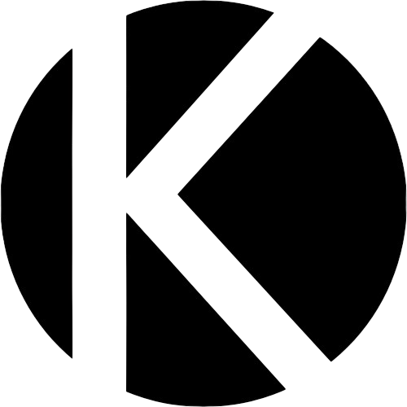

Kanduit
Kommunalatlas NRW
Interaktive Datenlandkarte für kommunale Entscheidungen
Kennzahl
Bevölkerung
Bevölkerungsentwicklung (%)
Arbeitslosenquote (%)
Anteil Ü65 (%)
BIP pro Kopf (€)
Ranking aller Kreise & kreisfreien Städte
#
Name
Wert
Bevölkerung